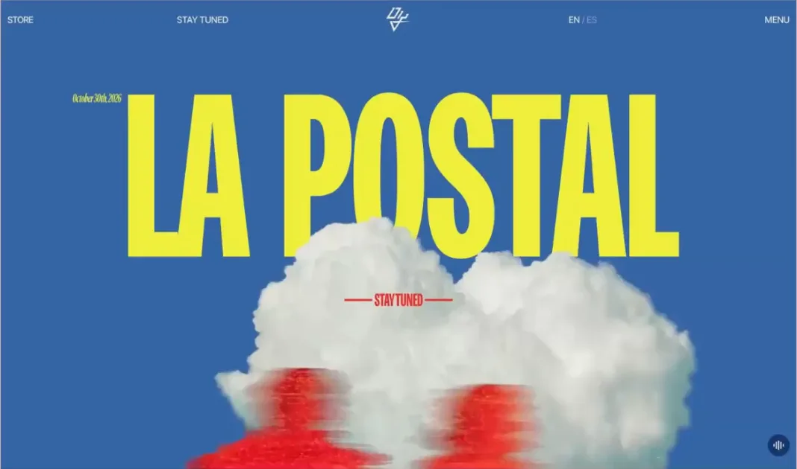
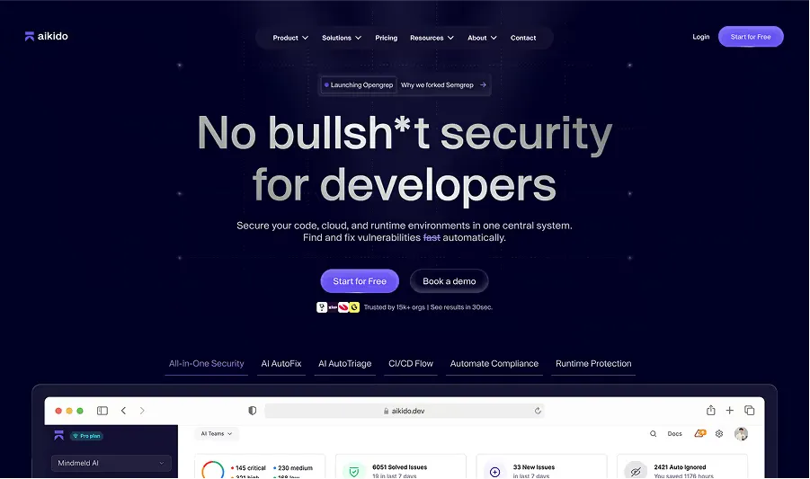
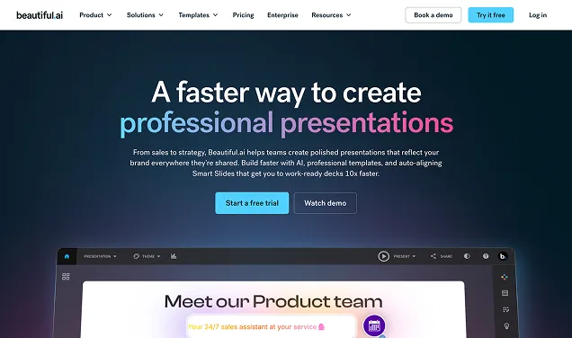
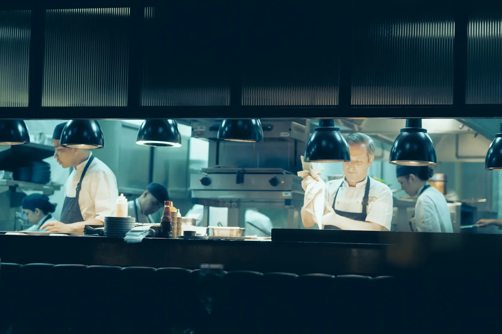
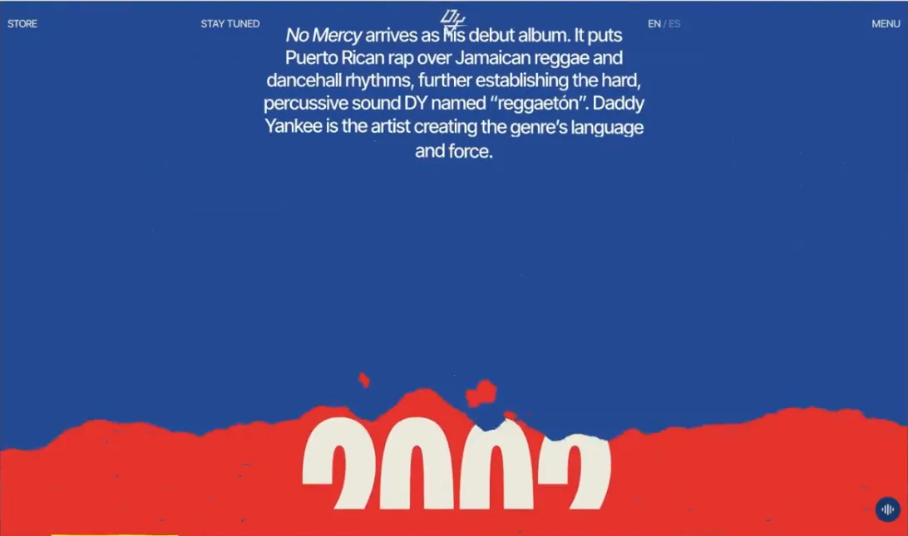
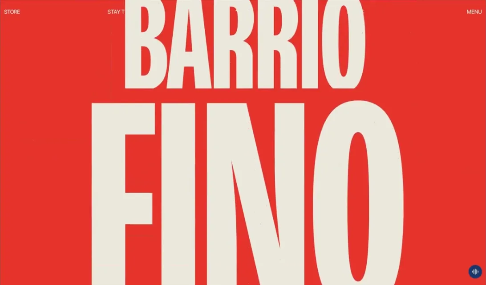

Salo rating
0/10
A concept pack, made by Salo
“Yes, Chef” is what a kitchen says when it has heard the order and will deliver it. That's your promise.
We kept what's working and sharpened the rest. The idea was already in your writing: your Daddy Yankee case study is told in courses, The order, The cook and The plate. So work arrives as orders, services become a menu, and every project leaves the pass checked.
Yes Chef helps you go to market faster, with a streamlined path to high-quality delivery.

Daddy Yankee
AikidoYes Chef helps you go to market faster, with a streamlined path to high-quality delivery.

Beautiful.aiSaaS · 2× conv.Your logo, your black and your flame orange. They're good, and they're yours.
A headline face with real weight, a serif for one accent phrase, mono for the details.
Heat that moves, ticket paper for pace, the order ticket and a kitchen icon set.
Heat is the one thing nobody else in your space owns. It moves slowly, sits behind things and parts around the cursor. Move through it.
Heard. Order up. On the pass. Served.

Heat · on photographyGreat marketing teams don't fail for lack of ideas. They fail when every change needs a developer. We fix that.
Icons, interface pieces and the order ticket. Everything a designer or developer needs to cook with the brand.
Interface pieces that warm up when you use them. Try them.
A long slip that turns facts into something people remember. Keep scrolling: it prints, gets heard, and tears off when it's served.
The order lands: client, dish and sides.
Confirmed. Everyone knows what's coming.
Final checks before anything goes out.
Live. The ticket tears off the rail.
Yes Chef helps you go to market faster, with a streamlined path to high-quality delivery and none of the usual agency drag.
Let's hop on a call →Seven slides, built from the enhanced brand.
Webflow design and development for marketing teams that need to ship fast, and keep shipping after launch.
Great marketing teams don't fail for lack of ideas. They fail when every change needs a developer. We build modular Webflow systems your team runs itself.
A home for the La Postal comeback that honors the career without becoming a museum.
One continuous scroll in Webflow, with WebGL motion, Localization and CMS release states.
Live in October 2026, ahead of the album. The label updates it without a ticket.


Fintech, cybersecurity, AI and music. Built for marketing teams that change their site every week.
Order one course or the full service. Projects or monthly retainers, from concept to launch and beyond.
“I've worked with plenty of studios and never before had such incredible results.”
Wells DouraghyFounder, With July
“Their Webflow expertise shines in the top-notch website they crafted for us.”
Giulia Bocci, Hoo Koo E Koo“We had a challenging project and timeline but the team at [Yes Chef] delivered.”
Kevin Kitching, Reventador GlobalGot an order?
Yes, Chef.
Keep scrolling
A first look at the yeschef.studio homepage on desktop, with notes you can open. The blurred ones are in the full audit.
Sources: the live page and its source code, axe-core 4.11 (WCAG 2.1 AA) and Lighthouse 13 (mobile, one lab run), captured on 18 November 2026. We had no analytics, so priorities are judged from the page itself. Prepared by Salo.
A clear scope and price for each job. Brand, site design or a pitch.
For lots of small jobs. Buy credits, use them as work comes in.
We join your sales calls, and can pitch in person in London alongside you.
Toby has been your waiter today. Thank you for dining with Salo.